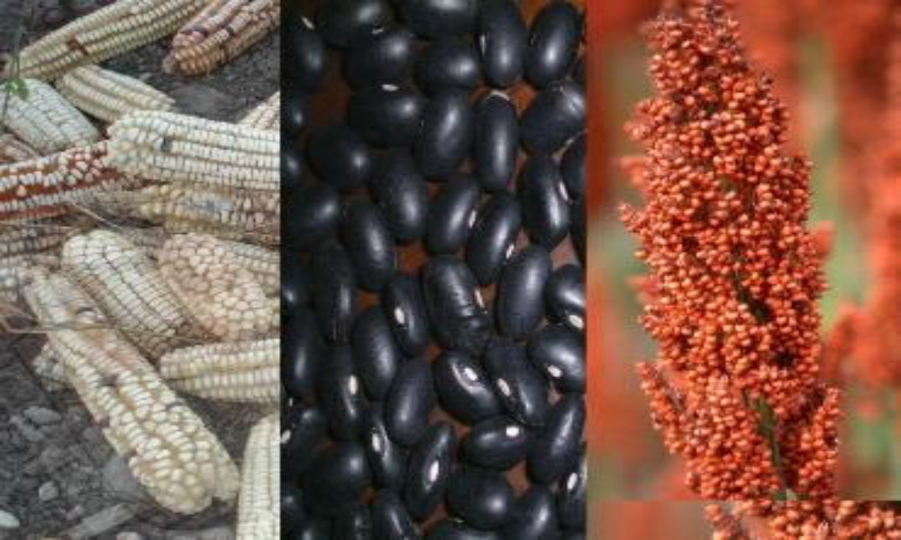

Innovación en el campo
Transformando la agricultura nicaragüense con tecnología.

Aprende y cultiva mejor
Conocimiento digital al servicio de los productores.

Sostenibilidad y futuro
Apoyando prácticas agrícolas responsables y productivas.